Historique
La cartographie est l'art et la science de créer des cartes : des représentations graphiques de la surface de la Terre ou d'autres surfaces. Les cartes ont été utilisées à travers l'histoire pour planifier des expéditions et des voyages, pour décrire des territoires et établir des frontières.
Les premières cartes connues ont été créées par les Babyloniens il y a environ 4 000 ans. La cartographie s'est développée de manière significative au cours des siècles suivants. Les Grecs ont créé des cartes du monde, tandis que les Romains ont produit des cartes détaillées de leurs territoires conquis. Au Moyen Âge, les cartes étaient souvent utilisées pour représenter des lieux saints et des itinéraires de pèlerinage, et aussi pour des buts militaires et administratives.
Durant la Renaissance, la cartographie est devenue une science plus précise et plus rigoureuse, avec des techniques de mesure et de triangulation plus sophistiquées. Les cartes étaient généralement décorées avec des illustrations et des ornements, les cartographes étaient souvent des artistes talentueux.
Au XIXe siècle, la cartographie a connu un autre grand saut en avant avec l'avènement de la cartographie thématique. Cette technique consistait à utiliser des symboles et des couleurs pour représenter des données géographiques telles que la population, l'agriculture, l'industrie, etc. La cartographie thématique est devenue un outil important pour les gouvernements et les entreprises.
Aujourd'hui, la cartographie est devenue une discipline complexe et multidisciplinaire, utilisée dans de nombreux domaines, de la navigation à la géologie, en incluant la planification urbaine, l'environnement, l'agriculture ou le tourisme.
- Chronologie de l’histoire de la dataviz
Projections cartographiques
Une sphère sur un plan !
La terre n’est pas une sphère parfaite, c’est un patatoïde aplati aux pôles avec des bosses et des creux. Pour pouvoir faire une projection sur un plan, la terre est considérée comme une ellipsoïde qui ne tient pas compte des irrégularités de la croute terrestre (WGS84). C’est à partir de cette référence que sont déterminées les latitudes et les longitudes.

Pour passer de l’ellipsoïde au plan, les coordonnées peuvent être projetées mathématiquement sur un plan (projection azimutale), un cylindre (projection cylindrique) ou un cône (projection conique).
Ce processus peut être visualisé en positionnant une source de lumière à l’intérieur d’un globe transparent, sur lequel sont placés les éléments de la terre. Ces derniers sont projetés sur ces formes. Le résultat est déroulé ensuite à plat sur une feuille de papier.
Chaque famille de transformation permet de créer une infinité de projections cartographiques en faisant varier le point de contact de ces surfaces.

Les projections sont aussi classées en fonction des déformations qu’elles produisent.
- Projections conformes : conservent les formes (angles)
- Projections équivalentes : conservent les rapports de surfaces (aires)
- Projection aphylactiques : un compromis entre projections conformes et équivalentes
La projection de Mercator (conforme)
La projection de Mercator, très utilisée, est une projection cylindrique conforme.
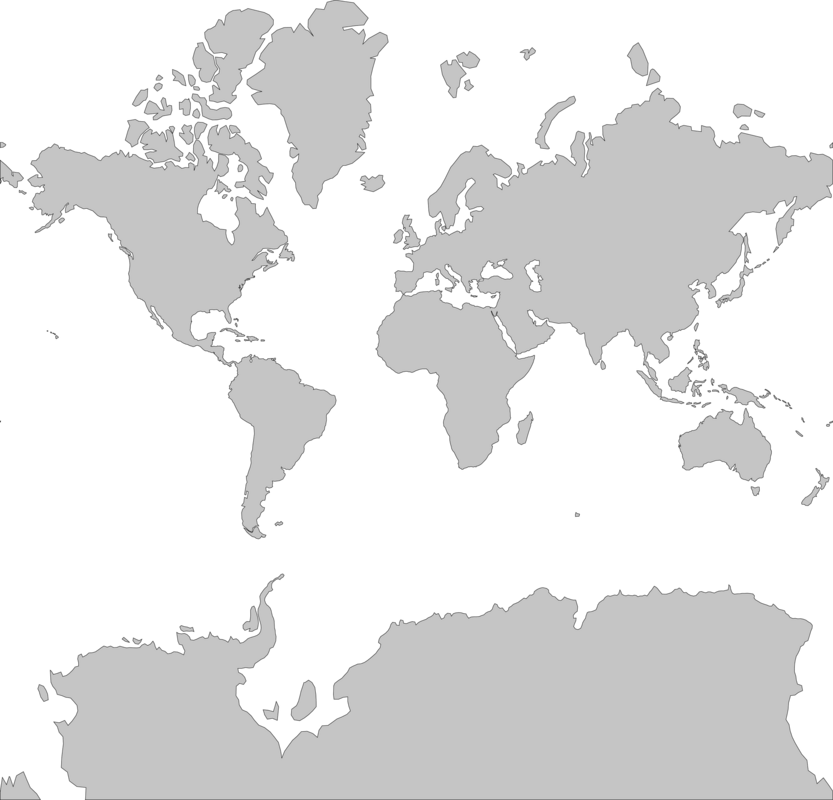
Avantages :
- Les pays de l’hémisphère nord, proches des pôles, apparaissent beaucoup plus grands qu’ils ne sont ; le Groenland apparait plus grand que l’Amérique du Sud alors qu’elle est huit fois plus grande.
- Historiquement, c’est la navigation maritime qui a fait que cette projection s’est imposée. Les formes sont conservées : on peut tracer une ligne entre deux points et suivre le cap à la boussole. C’est toujours la projection la plus familière et la plus utilisée.
Inconvénients :
- Les pays de l’hémisphère sud, en majorité, les pays en voie de développement, apparaissent plus petit en comparaison de ceux du nord.
Testez par vous-même
Cliquez sur le lien, sélectionnez un pays et déplacez-le sur la carte pour observer l’évolution de sa taille.

La projection de Peters (équivalente)
La projection de Peters est une projection cylindrique équivalente.
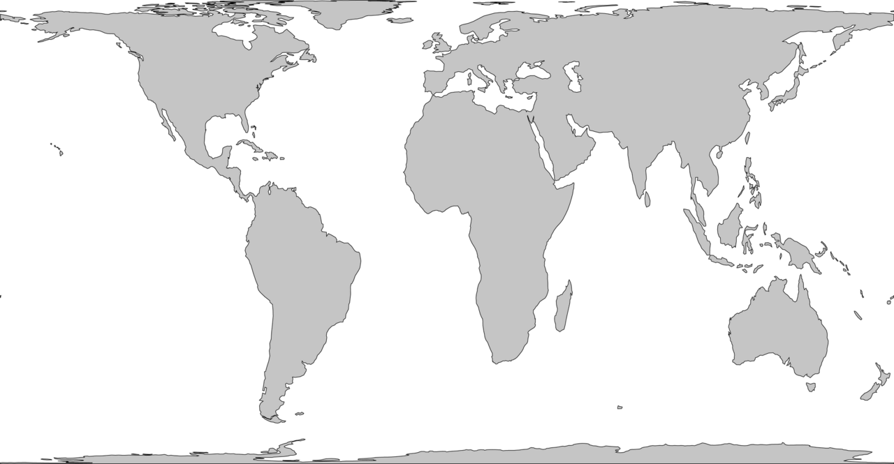
Avantages :
- Les surfaces relatives de pays sont correctes.
- Les pays du sud sont mieux représentés.
Inconvénients :
- Les déformations sont importantes.
Les projections locales
À l’échelle locale d’un pays, les déformations liées à une projection sont faibles. À cette échelle, les projections sont plus codifiées et cherchent à minimiser les déformations. Pour la France, c’est la projection conique Lambert 93 qui est la référence.
Pour l’Europe, c’est la projection LAEA (Lambert Azimutale Equal Area), Les États-Unis utilisent la projection Albers.
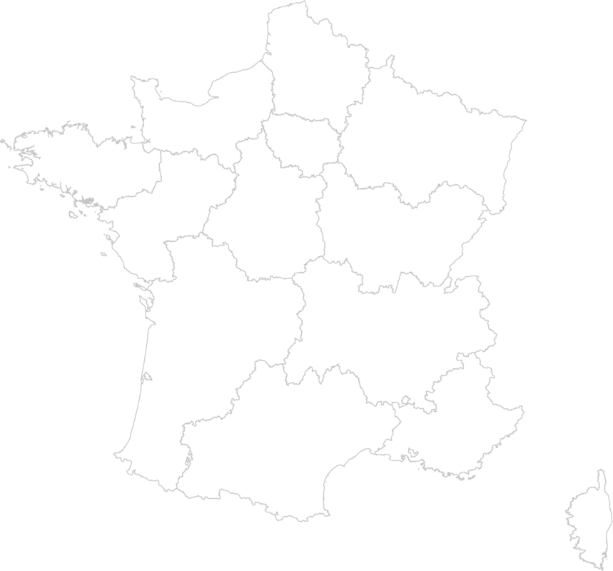France métropolitaine – projection conique Lambert- 93
.png)
Les autres projections
Il existe des dizaines d’autres projections cartographiques à choisir selon l’objectif pour laquelle la carte sera utilisée et les pays à représenter.
Suivant la projection, la représentation du monde prend un sens différent


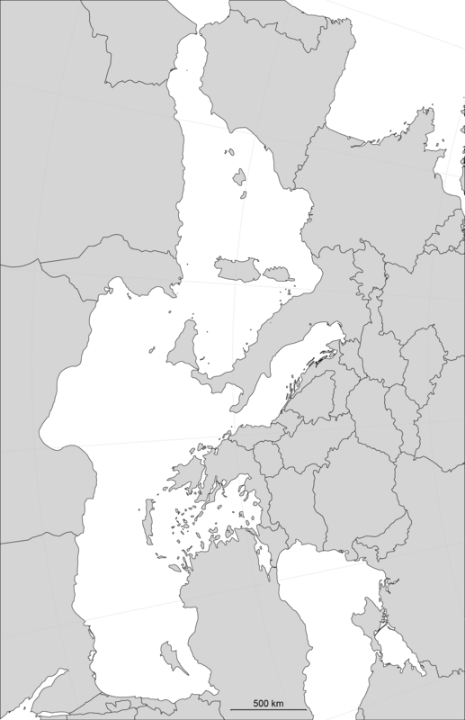Méditerranée – projection conique conforme - Avec une simple rotation de 90° la perception est totalement différente.
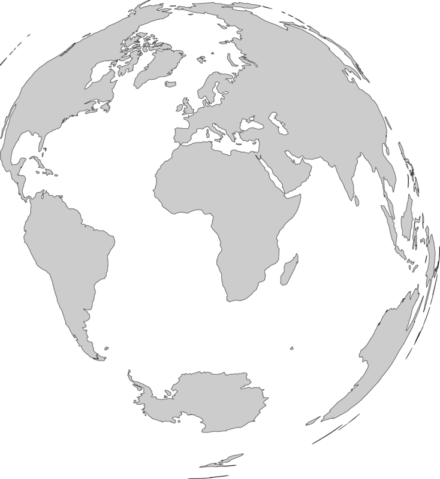Projection azimutale équivalente de Lambert.
Testez par vous-même
Les données en cartographie
Les cartes sont constituées d’un ensemble de couches : un fond de carte avec des calques de tracés de routes ou des étendues d’eau ou des d’agglomération…
En cartographie, il y a deux modes de représentation : l’image matricielle ou raster et l’image vectorielle ou le vecteur.


- Le mode vecteur : pour représenter des entités géographiques comme des contours de territoires, des tracés de routes ou de fleuves. Ces derniers sont codés sous forme d’objets géométriques (points, lignes, polygones) définis par des coordonnées (longitude, latitude, altitude) et d’autres attributs caractérisant l’objet (ex. la couleur).
- Exemples de formats des fichiers en mode vecteur utilisés en cartographie.
- .shapefile - (regroupe plusieurs fichiers avec les extensions .shp, .shx, .bdf, .prj et .cpg).
- .geojson - les données géographiques et les attributs sont établis sur le format JSON.
- .topojson – c’est une extension du format geoJSON plus compact, utile pour les applications sur le web.

- Le mode raster : ce sont des photographies aériennes ou des modèles numériques de terrains. Ces images sont constituées de pixels. Chaque pixel contient des attributs comme l’élévation qui permet de réaliser, avec des logiciels de système d’Information géographique (SIG), des fonds de cartes ou des cartes en relief.

Les formats des fichiers en mode raster sont tous des formats de fichiers images qui sont référencées avec des coordonnées géographiques pour pouvoir les placer sur un fond de plan. Les modèles numériques de terrain, proposés en données ouvertes par l’IGN sont des fichiers raster geoTIFF ou ASC (ASCII Grid).
Les représentations cartographiques
Carte choroplèthe
C’est une carte sur laquelle les entités géographiques représentées sont colorées ou remplies d'un motif qui montre des valeurs quantitatives (taux, indice, densité) ou des valeurs qualitatives ordonnées.
La carte choroplèthe représente des données par des plages de valeur discrétisée.
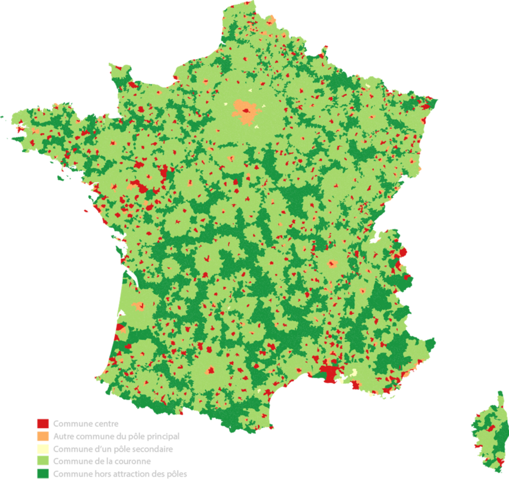Exemple - Carte choroplèthe représentant les communes en termes d’attractivité (données qualitatives). Source INSEE - Réalisation Alain Ottenheimer.
.png)
Carte de symboles proportionnels
Pour représenter des données quantitatives associées à chaque entité géographique, on privilégiera des cercles proportionnels plutôt qu’une bande de couleurs monochromatique.
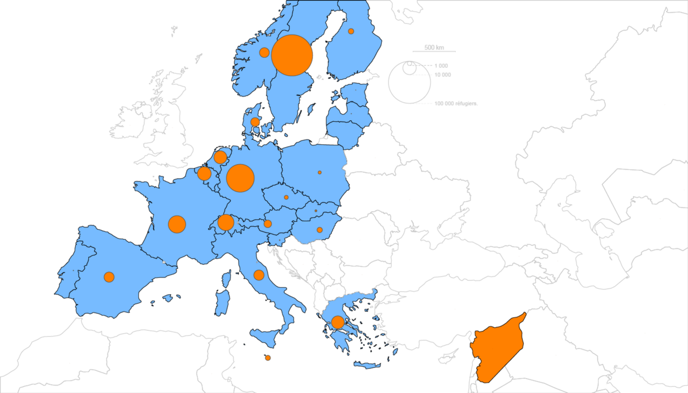Exemple - Réfugiés Syriens dans l’Union Européenne en 2015 - Source données ONU - Réalisation Association Toulouse-dataviz
Cartogramme / Carte en anamorphose
Un cartogramme est une carte pour laquelle une variable thématique, comme la population, remplace la surface des territoires représentés. La géométrie de l’espace de la carte est déformée afin de se conformer aux informations relatives à la variable représentée. Il s’agit de l’une des anamorphoses (déformation d’image) employé en cartographie.

Voir aussi le site Worldmapper qui propose une collection de cartes du monde appelées cartogrammes, où les territoires sont redimensionnés sur chaque carte en fonction du sujet d'intérêt.

Cartogramme de Dorling / cartogramme géométrique
Les données quantitatives absolues sont représentées par des cercles proportionnels. Les cercles sont positionnés en évitant de se superposer. Ils ne sont donc pas systématiquement positionnés sur les centroïdes des territoires. Ils peuvent être représentés sans fond de carte. Les cercles peuvent être replacés par des carrés ou des rectangles.
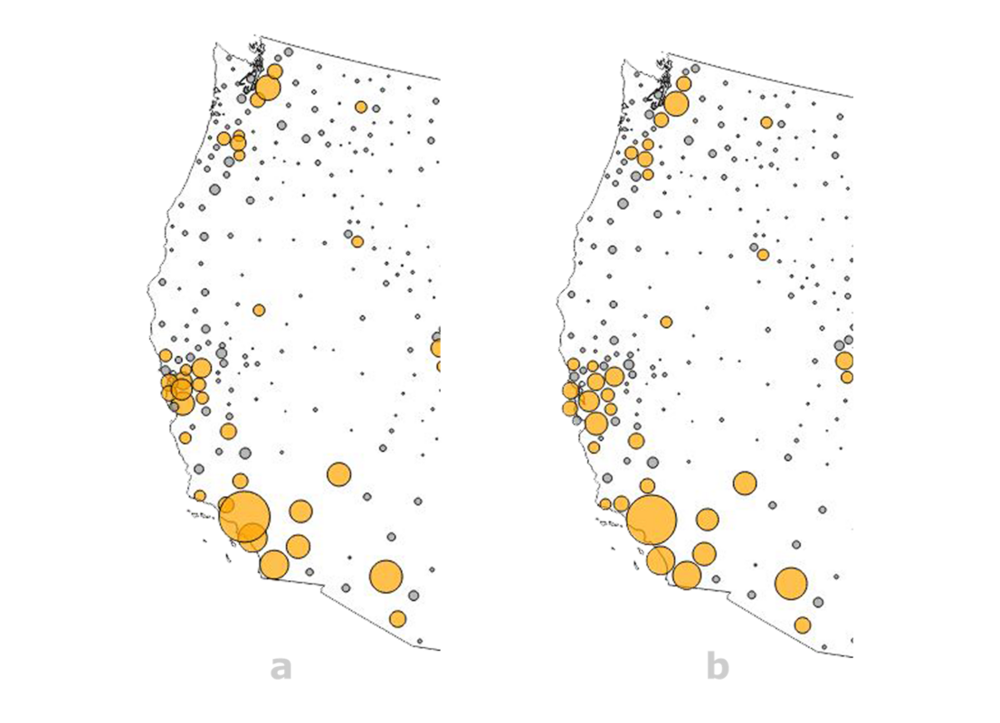Exemple – les cercles en orange représentent la population active dans les différents comtés de la côte ouest des USA - a) les cercles sont centrés sur les comtés - b) les cercles sont déplacés pour éviter leurs superpositions et améliorer la lisibilité. Réalisation Observablehq.
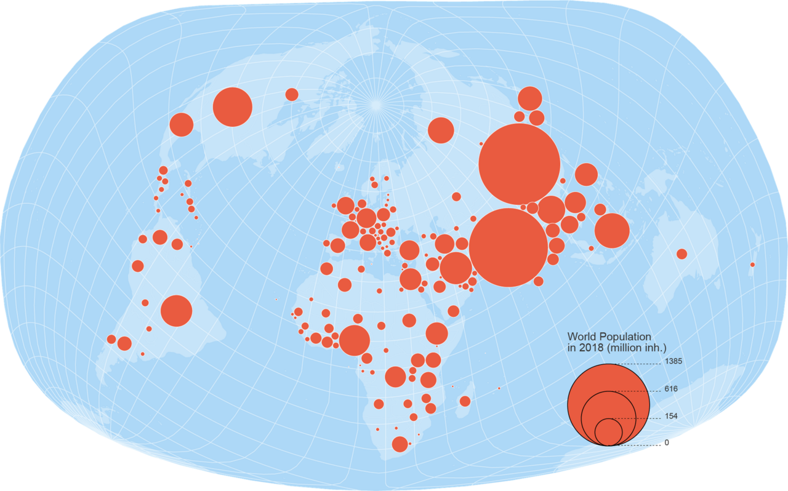Exemple - Population du monde en 2018 - Réalisation Nicolas Lambert

Autres représentations
Il y a une infinité de variations en cartographie.
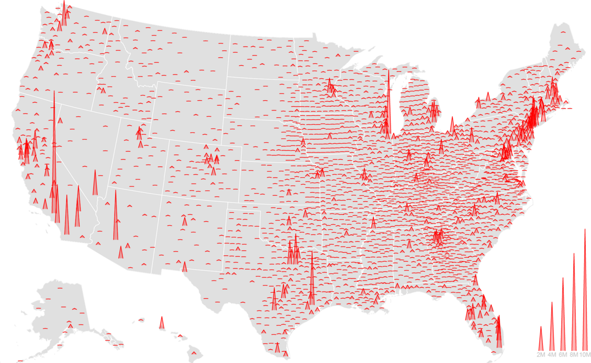
Population aux USA en 2016 par conté - Les cercles ou les rectangles sont remplacés par des pointes - Réalisation : observablehq
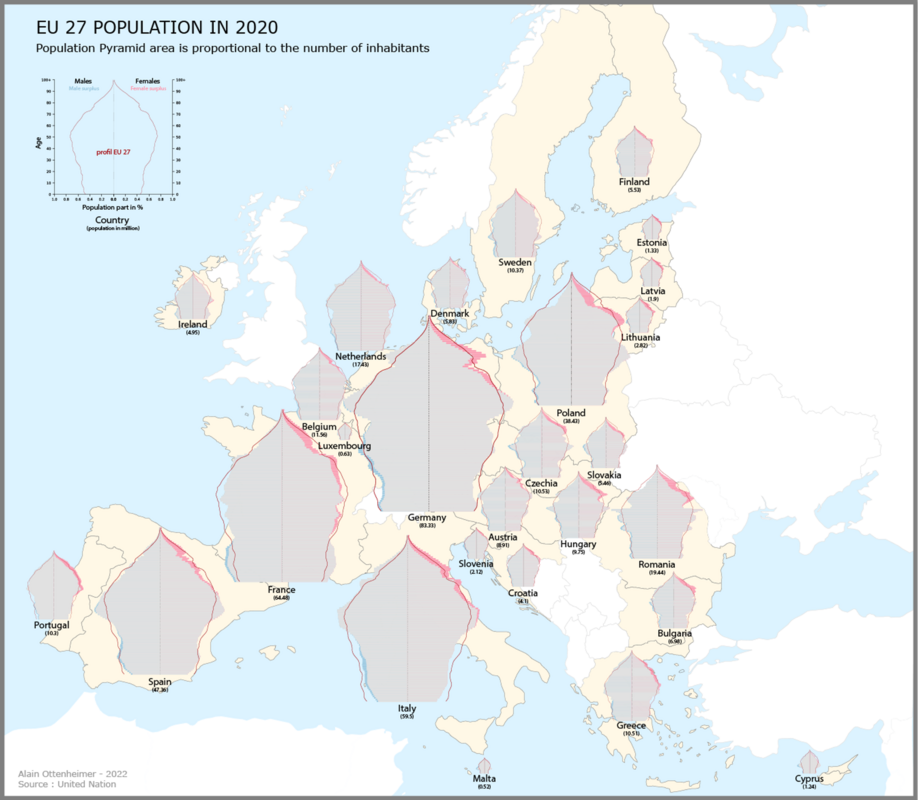Population des pays de l’Union Européenne en 2020 - Les cercles ou les rectangles sont remplacés par des pyramides des âges dont les surfaces sont proportionnelles à la population des pays - Réalisation : Alain Ottenheimer .

Recommandations
Recommandation 1
Les projections :
- Pour une carte représentant le monde, une multitude de projections sont possibles. Choisissez une projection en fonction du message à transmettre et du public ciblé. Les atlas papier sont une bonne source d’inspiration. Une projection pour chaque usage, un usage pour chaque projection : Soyez créatif !
- Pour les représentations locales (pays, régions), privilégiez les projections recommandées, comme la projection conique Lambert- 93 pour la France ou la projection LAEA (Lambert Azimutale Equal Area) pour l’Europe.
Recommandation 2
Les couleurs :
- Au-delà d’un nombre limité de couleurs, l’œil ne parvient plus à discerner l’information. Si le nombre de catégories à représenter est trop élevé, regroupez les catégories.
- Encoder une variable continue avec une bande de couleurs monochromatiques est peu efficaces pour évaluer des valeurs. Privilégiez plutôt des valeurs discrètes (10 maximum) ou mieux remplacer les couleurs par des cercles proportionnels à la valeur s’il n’y a pas trop de territoires représentés.
- Utiliser un site comme colorbrewer pour choisir des jeux de couleur adaptés à la cartographie.
- Les schémas séquentiels sont adaptés aux données ordonnées qui progressent de gauche à droite.
- Les schémas divergents pour mettre bien différencier les valeurs de la plage de données. La classe critique ou rupture au milieu de la légende est accentuée par des couleurs claires et les extrêmes bas et hauts sont accentués par des couleurs sombres aux teintes contrastées.
- Les schémas qualitatifs n'impliquent pas de différences d'amplitude entre les classes de légendes, et les teintes sont utilisées pour créer les principales différences visuelles entre les classes. Les schémas qualitatifs sont les plus adaptés pour représenter des données nominales ou catégorielles.


Recommandation 3
Les cartes de stock :
- Pour représenter des données quantitatives associées aux entités géographiques, utilisez des cercles proportionnels à la valeur représentée (si le nombre d’entités représenté reste limité). Utilisez une carte choroplèthe avec une bande de couleurs monochromatique discrètes lorsque le nombre d’entités géographiques est très élevé (ex : communes de France)
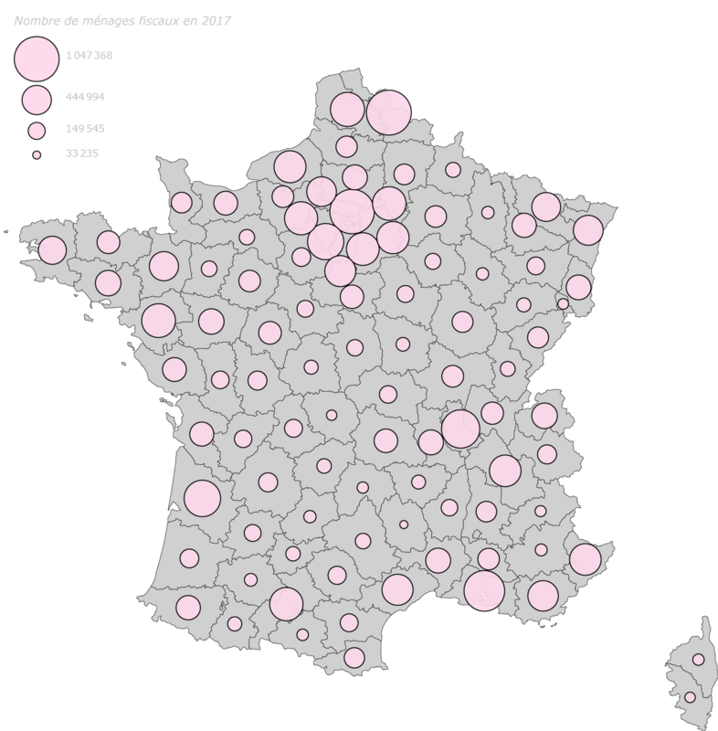Nombre de ménages fiscaux en 2017 - Les cercles des départements sont décalés pour ne pas se superposer - Carte réalisée avec l’outil MAGRIT (voir section outil).
Recommandation 4
Les cartes choroplèthes :
- Pour représenter des données qualitatives ou quantitatives (ratio, indice, densité) associées aux entités géographiques, utilisez une carte choroplèthe

Recommandation 5
Privilégiez une représentation avec de multiples petits de carte : une solution efficace pour révéler l’information.

Testez par vous-même
Support pédagogique réalisé par l’association Toulouse DataViz dans le cadre d’interventions dans des collèges.
Outils
Il existe de nombreux d’outils de visualisation de données qui permettent de faire des cartes. Nous vous proposons une petite sélection.
Niveau découverte :
Poiur débuter, utilisez les outils Google Sheet ou Excel pour réaliser en quelques clics une carte. Les choix sont très limités, mais permettent néanmoins de se familiariser à la cartographie en faisant des cartes très basiques (uniquement choroplèthe et/ou carte de symboles proportionnels). Excel propose plusieurs projections : Miller cylindrique, Mercator et Robinson pseudo-cylindrique alors que Google Sheet ne propose que la projection Mercator.
Tutoriel pour faire une carte avec Excel – ici
EXCEL
En savoir +
- Il n’y a pas de notion de coordonnées géographiques Lat/Long. En créant une colonne pays et une colonne départements, Excel reconnait les valeurs!
Niveau Intermédiaire :
- Avec un peu d’expérience en cartographie, utilisez l’outil MAGRIT pour réaliser facilement un grand choix de cartes. MAGRIT peut être utilisé en ligne ou téléchargé gratuitement. Les cartes peuvent être exportées dans plusieurs formats dont le format SVG. Le fichier projet est aussi exportable dans un fichier json. Exemple de fichier à télécharger et à ouvrir avec l’outil MAGRIT :
- Tableau Public est une plate-forme gratuite qui permet d'explorer, de créer et de publier des visualisations de données dont des cartes. Le site Tableau public propose de nombreux exemples de réalisation de cartes téléchargeables.
Niveau avancé :
- Leaflet est une librairie JavaScript libre de cartographie en ligne développée par Vladimir Agafonkin et de nombreux contributeurs. Cette bibliothèque est utilisée par le projet de cartographie libre et ouverte OpenStreetMap. La librairie Leaflet est conçue pour être simple, performante et facile à utiliser, l’idéal pour afficher une carte en JavaScript !
- QGIS est un Système d'Information Géographique Libre et Open Source qui permet créer, éditer, visualiser, analyser et publier des données géospatiales. C’est un logiciel de référence en cartographie utilisé autant par les amateurs que les professionnels de cartographie. Il est accessible aux non-programmeurs, mais requiert un apprentissage.
- Observablehq est une plate-forme sur laquelle vous pouvez explorer, analyser, visualiser et communiquer en collaboration avec des données sur le Web. C’est une plateforme en ligne créée en 2018 qui est établie sur le langage JavaScript, ce qui requiert une connaissance de ce langage. Cet outil est devenu incontournable en quelques années avec des milliers d’exemples réutilisables en cartographie. Connectez-vous à la plateforme Observablehq et faites une recherche avec le mot clé “map” pour voir des milliers d’exemples de réalisation.